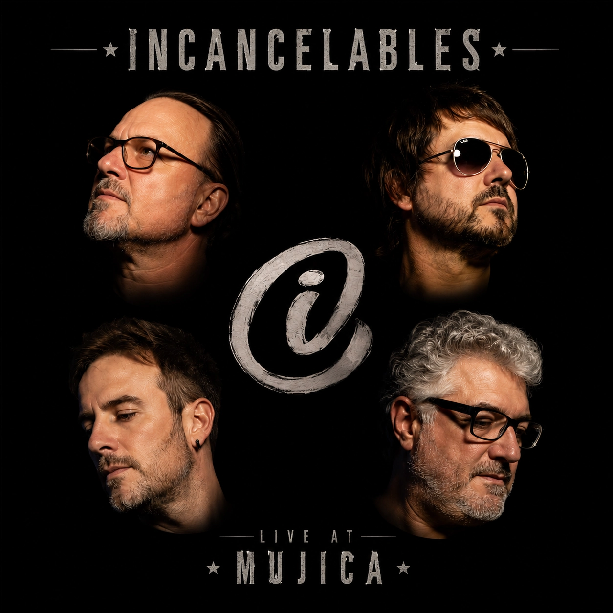

Live at Mujica
El show que siempre quisimos dar, ahora grabado en vivo desde nuestra sala. Cada mes liberamos una nueva canción hasta completar el disco.
🔥 Recién salido del horno
placeholder
Live at Mujica
Playlist oficial del disco.
Reproduciendo
Escuchá el álbum completo
Acerca de Live at Mujica
Ensayar, arreglar los temas, poner todo en hacer lo que más nos gusta, y después chocar contra la frustación de que por causas externas, no podamos dar el show que preparamos. De todas esas ganas, de todas estas barreras, nace la idea de grabar el show con la calidad de sonido que siempre quisimos tener. Grabado en vivo en nuestra sala, para los que tantas veces vinieron, para los que todavía no nos conocen.. para todos.
Vamos a ir liberando de a un tema por mes, hasta completar el disco, el show, la experiencia...
Sumate, como si estuvieras ahí